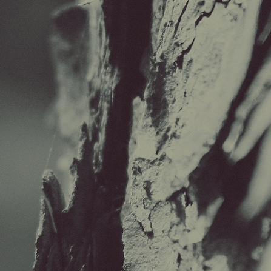

creations
some of the stuff i've made in my free timepoetry
it's emotion, but converted to rhyme and text!maybe they will make sense to someone?
old coding things
old (mostly html) projects i did long, long, long, long ago
scrapped third iteration of
flootah.com.
came close to a decent one-pager, but i had no motivation to complete it.
visit
came close to a decent one-pager, but i had no motivation to complete it.
visit
amalgamation of several startpages i
liked from the /wg/ boards. currently serves as my current new tab page.
visit
visit
 second iteration of flootah.com.
aimed to be a little flashier than v1, but ultimately i had too little to fill such a large place.
visit
aimed to be a little flashier than v1, but ultimately i had too little to fill such a large place.
visit
an ongoing series of poems and poetic
thoughts put into an html format. (deprecated now that it's on the main
'creations' list)
visit
visit
html5 port of a .swf i found on the
internet.
uses a javascript library and base mp4 to sync music and video. kinda buggy.
visit
uses a javascript library and base mp4 to sync music and video. kinda buggy.
visit
first iteration of flootah.com,
created back in highschool
i aimed to be minimalist, but perhaps i went too far.
visit
i aimed to be minimalist, but perhaps i went too far.
visit